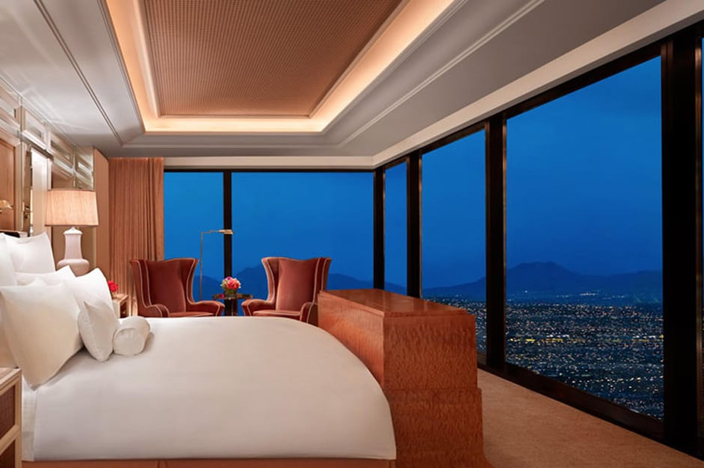
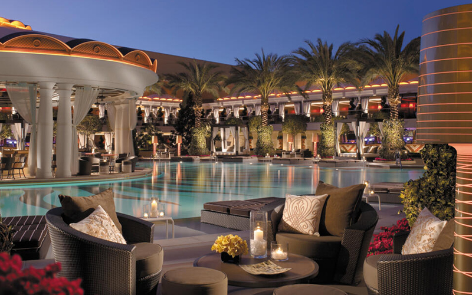

Chapter 03
Wynn
Las Vegas
The Wynn is the Forbes five-star outlier on the Strip — the only North American resort to hold five-star ratings for both its hotel and spa for fifteen straight years. A different texture of weekend: a controlled, polished indoor world, walkable to everything, with the food and the bed quality that very few places can match.




Rooms4,748Across Wynn & Encore towers
Forbes Stars5+5Hotel and spa; only such property in N.A.
Spa SqFt45kTwo separate facilities — Wynn & Encore
Restaurants22Including five Michelin starred
The Spa at Wynn
The most decorated spa in the country.
Two separate spa facilities under one roof, each over 20,000 sq ft. Forbes five-star for fifteen consecutive years. The wet circuit — steam, sauna, rainfall showers, mineral pools — is open to all spa-day guests for the full day.
The food in this hotel is also genuinely the point. Five Michelin stars across the property.
- Good LifeTheir signature: 100 minutes of brushing, polishing, full-body massage, and a scalp ritual.
- HammamTraditional Moroccan hammam ritual — black soap, savon noir, kessa exfoliation. 90 minutes.
- Wet LoungeFull-day access to the steam, sauna, vitality pool, and rainfall showers. Often the whole booking.
- MizumiForbes five-star Japanese with a 90-ft waterfall outside the window. Order omakase.
- DelilahA 1950s supper club inside the resort. Live music, prime rib, a wedding-cake-tier cocktail menu.
Las Vegas — eight hand-picked stops
Beyond the Strip
01
Antiquing
The 18b Arts District — Antiques Row
Three blocks of vintage and antique dealers in downtown's arts district —
Patina Décor, The Glass Pony, Retro Vegas. Mid-century, Hollywood Regency,
old casino ephemera. Better than anything on the Strip.
02
Library — Special Collections
UNLV Special Collections — Showgirl Archive
Open to the public by appointment. The Lied Library's Special Collections
holds the most complete archive of Las Vegas casino, showgirl, and Rat Pack
ephemera in existence. Costume sketches, programs, signed press shots.
03
Mid-century
The Neon Museum — Night Tour
Outdoor "boneyard" of 250 restored mid-century signs from the original Strip.
Book the after-dark Brilliant! Tour — many signs are re-illuminated with
digital projection mapping. Visually unmatched.
04
French
Bouchon — Thomas Keller
Inside the Venetian. Keller's French bistro — the steak frites, the roast
chicken, the bread is theirs. Outdoor courtyard with a fountain when the
evening cools. Lunch is the better booking.
05
Art Museum
Bellagio Gallery of Fine Art
The Strip's serious small museum. Rotating shows from the world's major
collections — recent runs have included Picasso, Yayoi Kusama, and the
Whitney. One quiet room, one hour, then back into the noise.
06
Bookstore
The Writer's Block
Independent bookstore in downtown's Fremont East, the city's best literary
anchor. Curated fiction, a deep poetry section, and an indoor "artificial
forest" installation that has to be seen. Coffee bar in the back.
07
Day Trip
Valley of Fire — Sunrise Drive
45 minutes north of the Strip. Red sandstone, petroglyphs, no crowds before
9 a.m. in summer. Go at sunrise — back at the spa by 11. The single best
morning you can have from a Vegas hotel.
08
Dinner
Bardot Brasserie — Michael Mina
Inside the Aria. A grown-up Parisian brasserie — escargot, sole meunière,
a duck à l'orange that still rotates on a cart. Late-night French onion
soup at the bar after a show.
wynnlasvegas.com
Visit the hotel →